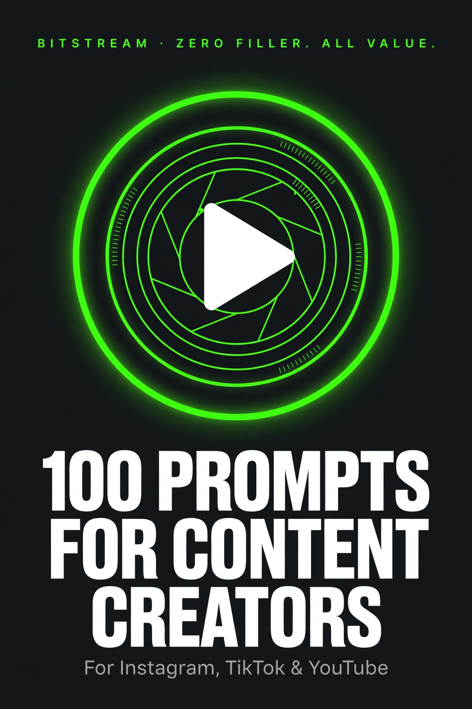

BITSTREAM · ZERO FILLER. ALL VALUE.
100 Prompts for
Content Creators
100 copy-paste prompts for new creators.
Find your niche, script your shorts, and grow on Instagram, TikTok & YouTube — with just your phone and a free AI tool.
ESSENTIAL PACK · $7.99
How to use this pack (60 seconds)
- Open a free AI tool — ChatGPT (chatgpt.com), Claude (claude.ai), or Gemini (gemini.google.com). No paid plan needed.
- Copy any prompt and replace the [BRACKETED] parts with your niche, platform, and details.
- Be specific. "Give me video ideas" gets a generic list. "Give me 30 days of TikTok ideas for a beginner cooking channel aimed at busy moms" gets a plan.
- Treat the first answer as a draft. Reply with "make it shorter," "more casual," or "give me 10 more" until it's right.
- Film with your phone. Every filming prompt in this pack assumes a phone and free editing apps — no studio gear needed.
Rule 1 — Post ugly first. Your first 20 videos will be rough. Post them anyway. The prompts in section 1–3 make rough publishable.
Rule 2 — Hook first, film second. Never film before you have the hook written down. Prompts 26–28 give you hooks in seconds.
Rule 3 — One platform, then repurpose. Master one platform first, then use section 6 to turn every win into 7 posts everywhere else.
1 · Find Your Niche & Position
Pick what you make and who it's for — the decision that makes everything after it easier.
PROMPT 01
Niche sweet-spot finder
I want to make videos about [INTEREST], my skills are [SKILL 1, SKILL 2], and I care about [VALUE]. List 5 niches at the intersection of these, rank them by demand and competition, and tell me the top pick.
PROMPT 02
Audience avatar builder
Describe my ideal viewer for a channel about [TOPIC]. Give me their age range, what frustrates them, what they already watch, and the exact words they'd use to describe their problem.
PROMPT 03
Competitor gap analysis
I'm starting a channel about [TOPIC]. Analyze what the top creators in this niche do well and what they all ignore. Then give me 3 gaps I could fill from day one.
PROMPT 04
Niche validator
Here are my 3 niche ideas: [IDEA A, IDEA B, IDEA C]. Score each on competition level, monetization potential, and how long content ideas would last. Tell me which to pick and why.
PROMPT 05
One-sentence channel promise
Write 5 one-sentence descriptions for a [PLATFORM] account about [TOPIC]. Each must say who it's for and what they'll get. Pick the best one and explain why.
PROMPT 06
Content pillars picker
I make [VIDEO TYPE] videos about [TOPIC] for [AUDIENCE]. Give me 4 content pillars — one educational, one entertaining, one personal, one interactive — with 3 example video ideas under each.
PROMPT 07
The 100-video test
Before I commit to the niche of [TOPIC], give me 100 video title ideas so I can check I'd never run out of things to say. Organize them under 5 sub-topics.
PROMPT 08
Standing out in a crowded niche
Everyone in [NICHE] posts [TYPICAL CONTENT]. Give me 5 angles or formats that would make my version stand out — without faking expertise I don't have.
PROMPT 09
What I talk about for free
Ask me 8 questions, one at a time, about what I know, what I love, and what people ask me about. At the end, name 3 niche directions I could build content around.
PROMPT 10
Pivoting without starting over
I have [FOLLOWER COUNT] followers from [OLD NICHE] and want to shift to [NEW NICHE]. Give me a 4-week transition plan so I don't lose everyone overnight.
PROMPT 11
Passion vs. profit check
I love [TOPIC] but I'm not sure it can pay. List the real revenue streams for creators in this niche — ads, sponsors, products, affiliates — and rate the realistic chances for a small account.
PROMPT 12
Name, handle & bio combo
Generate 15 handle ideas for a [PLATFORM] account about [TOPIC]. All under 15 characters, easy to spell, no numbers. Then pair the 3 best with a one-line bio each.
2 · 30-Day Content Calendars
Never stare at a blank page again — calendars, idea packs, and series starters.
PROMPT 13
30-day calendar for beginners
Build me a 30-day posting calendar: [3] posts per week on [PLATFORM] about [TOPIC]. For each day give me the post type (reel, carousel, story), the topic, and a one-line hook.
PROMPT 14
Daily posting sprint
I want to post every day for 30 days about [TOPIC] on [PLATFORM]. Give me all 30 topics — a mix of educational, entertaining, and personal — ordered so I build momentum.
PROMPT 15
First 10 videos roadmap
I'm brand new on [PLATFORM]. Give me my first 10 videos about [TOPIC]: what to post in what order, why each one matters, and what each video should make viewers do next.
PROMPT 16
Weekly themes system
Create 4 weekly themes for my [NICHE] account (like Myth-Busting Monday or Tip Tuesday). Under each theme, give me 8 ready-to-film ideas.
PROMPT 17
Evergreen backlog builder
Give me 20 evergreen video ideas about [TOPIC] — topics that will still get views 6 months from now — so I always have something to film on slow days.
PROMPT 18
Trend-jacking calendar
Look at what's trending right now in [NICHE] on [PLATFORM]. Give me 10 video ideas that put my spin on the trend without copying everyone else.
PROMPT 19
Carousel ideas pack
Write 10 Instagram carousel ideas for [NICHE]. For each: the cover slide text, what goes on each of 5-7 slides, and the call to action on the last slide.
PROMPT 20
Story ideas for slow weeks
Give me 20 Instagram/TikTok story ideas for [NICHE] that take under 2 minutes to make — polls, behind-the-scenes, question boxes — for weeks when I have nothing filmed.
PROMPT 21
Comment magnets (the good kind)
Give me 15 question-based post ideas about [TOPIC] designed to get real comments — debates, hot takes, what-would-you-do scenarios — without rage-bait.
PROMPT 22
Seasonal content angles
It's [OCTOBER / UPCOMING SEASON]. Give me 12 seasonal video ideas for [NICHE] tied to holidays, weather, and what people are planning right now.
PROMPT 23
Series starter ideas
Give me 10 recurring-series concepts for [NICHE] (like 'part 1 of...') that make viewers follow to see the next episode. Each with a title and the first episode's hook.
PROMPT 24
Slow-growth starter plan
I have zero followers in [NICHE]. Give me a 30-day plan focused on learning the craft and posting consistently — what to track, what to ignore, and how to measure real progress.
PROMPT 25
Content idea refiner
Here are my rough video ideas: [LIST THEM]. Turn each into a clickable title, a one-sentence hook, and a 3-bullet outline. Cut or merge the weak ones and tell me why.
3 · Hooks, Reels & TikTok Scripts
Win the first 3 seconds, then earn the next 30 — hooks and full scripts for short-form.
PROMPT 26
The 3-second hook test
Here's my video opening line: [YOUR LINE]. Rewrite it 5 ways using these patterns: bold claim, question, mistake, story, and 'stop doing X'. Tell me which would stop the scroll best and why.
PROMPT 27
Hook formulas by niche
Give me 20 hook lines (first 3 seconds, spoken) for [NICHE] videos. Mix pattern interrupts, questions, bold statements, and personal stories. Under 12 words each.
PROMPT 28
Full 30-second Reel script
Write a 30-second talking-head script about [TOPIC] for [AUDIENCE]. Include the spoken hook, 3 beats with timing marks, what to show on screen for each beat, and the CTA. Casual tone, no jargon.
PROMPT 29
60-second explainer script
Write a 60-second script explaining [COMPLEX TOPIC] to [BEGINNERS]. Hook, 3 key points, one example, and a CTA. Mark where to cut to B-roll.
PROMPT 30
Storytime script structure
Turn this story into a storytime-style TikTok script: [YOUR STORY]. Give me the cold-open line, the setup, 3 escalating beats, and the payoff ending. Under 90 seconds spoken.
PROMPT 31
Listicle Reel format
Write a '3 things I wish I knew about [TOPIC]' script. Each point gets one sentence of claim plus one sentence of proof. Hook plus outro. Under 45 seconds.
PROMPT 32
POV skit script
Write a 30-second POV skit script about [RELATABLE SITUATION IN YOUR NICHE]. Include stage directions (what I'm doing on camera), the spoken lines, and the punchline beat.
PROMPT 33
Tutorial with text on screen
Write a quick tutorial script for [HOW-TO TOPIC]. The video is mostly text on screen with music — so give me the text for each of 5 cuts, an optional voiceover, and the caption.
PROMPT 34
Transition Reel concepts
Give me 5 transition ideas for a [NICHE] Reel — outfit change, before/after, snap cuts. For each: what to film, where the cut happens, and the type of trending sound that fits.
PROMPT 35
Talking-head confidence rewrite
Here's my script draft: [PASTE IT]. Rewrite it to sound like how I actually talk — contractions, short sentences, no corporate words. Mark the 3 words I should stress when I deliver it.
PROMPT 36
Sound-off friendly version
Rework this script so it works with the sound off: [PASTE IT]. Add exactly what text appears on screen, when it appears, and what the thumbnail-style first frame says.
PROMPT 37
Bloopers & BTS script
Write a light behind-the-scenes script for a [NICHE] shoot: a 20-second mess-ups montage intro, what to narrate over it, and the 'real talk' line that makes it relatable.
PROMPT 38
Duet / stitch response script
I want to stitch this video: [DESCRIBE IT]. Give me my 10-second reaction intro, my counterpoint or addition in 3 sentences, and my CTA. Respectful tone, not a takedown.
4 · YouTube Titles, Descriptions & Thumbnails
Get the click honestly, then deliver — titles, thumbnails, and the packaging that decides everything.
PROMPT 39
Clickable-but-honest titles
Give me 15 YouTube titles for a video about [TOPIC]. Curiosity-driven but honest — no clickbait lies. Mark your top 3 and say why they'd get clicked.
PROMPT 40
Title + thumbnail pairing
My video is about [TOPIC]. Give me 8 title-and-thumbnail-text pairs where the title and the thumbnail say DIFFERENT things (no repeated words). Mark the strongest pair.
PROMPT 41
A/B title test options
Give me 6 title variations for this video, each using a different formula: question, number, bold claim, how-to, negative angle, personal result. The video is about: [SUMMARY].
PROMPT 42
Description box template
Write a YouTube description for a video about [TOPIC]. Include a 2-sentence summary, timestamps for [4] chapters, links to [MY SOCIALS], and one keyword-rich paragraph. Under 300 words.
PROMPT 43
Timestamps from rough notes
Here are my rough chapter breaks: [LIST THEM]. Turn them into YouTube timestamps formatted like 00:00 — Chapter Name, with click-worthy chapter names.
PROMPT 44
Tags & keywords list
Give me 20 tags and keyword phrases for a YouTube video about [TOPIC] aimed at [AUDIENCE]. Mix broad and specific. Put the 5 most important first.
PROMPT 45
Thumbnail text ideas
Write 12 thumbnail text options for a video titled [TITLE]. Each is 1-4 words max, big emotion or curiosity, and does NOT repeat any words from the title.
PROMPT 46
Thumbnail concept sketches
Describe 3 thumbnail concepts for my video about [TOPIC]: the image, the facial expression or emotion, the text, and the color contrast. I make thumbnails with [CANVA / A PHONE APP].
PROMPT 47
End-screen & pinned comment
Write my end-screen outro line (under 10 seconds spoken) for a video about [TOPIC], plus the pinned comment that drives the most replies. Include which next video to link.
PROMPT 48
First-15-seconds intro script
Write the first 15 seconds of my YouTube video about [TOPIC]. Promise the outcome, name the audience, kill the rambling intro. Spoken and conversational.
PROMPT 49
Long-form video outline
Outline a [10]-minute YouTube video about [TOPIC]: the hook, 4 main sections with timestamps, the re-hook between sections, and the CTA at 80% and 100%. Bullet points, not a full script.
PROMPT 50
Shorts from a long video
Here's my YouTube video transcript: [PASTE IT]. Pull 3 moments that would work as standalone Shorts. For each: the clip's title, the exact hook line, and why it stands alone.
PROMPT 51
Series episode titles
My YouTube series is called [SERIES NAME] about [TOPIC]. Give me titles for episodes 1 through 8 — each curiosity-driven — with a one-line description of what each covers.
5 · Captions, Hashtags & Posting Strategy
The words under the video do real work — captions that get saved and a posting rhythm you can keep.
PROMPT 52
Caption that gets saves
Write an Instagram caption for [POST TOPIC] designed to get saves: a hook line, 3 valuable bullets, and a CTA to save for later. Under 150 words. My tone is [CASUAL / FUNNY / SERIOUS].
PROMPT 53
Long-form story caption
Write a storytelling caption about [YOUR EXPERIENCE] in [NICHE]. Opening hook, the struggle, the turning point, the lesson, and a question for comments. Under 200 words.
PROMPT 54
Micro captions, 5 ways
Write 5 micro captions (3 lines max) for [PHOTO OR VIDEO TYPE] in [NICHE]. Each must work even if the viewer reads nothing more. Different moods for each.
PROMPT 55
Call-to-action bank
Give me 20 call-to-action lines for [NICHE] posts: follow, comment, share, save, DM. Rotate-worthy — not all sounding the same. Short and natural.
PROMPT 56
Hashtag sets, done right
Give me 3 hashtag sets (10 tags each) for [NICHE]: one broad-reach set, one niche-targeted set, one trending-mix set. No banned or spammy tags.
PROMPT 57
Posting-time plan
I post [3x] per week on [PLATFORM] and my audience is [DESCRIBE THEM]. Give me the best days and times to post, plus how to test and adjust over 4 weeks.
PROMPT 58
Content mix ratio
For a [NICHE] account with [FOLLOWER COUNT] followers, what's the right mix? Give me a weekly ratio of educational vs. entertaining vs. personal vs. promotional posts, with an example of each.
PROMPT 59
Bio rewrite for follows
Rewrite my [PLATFORM] bio. I make [CONTENT TYPE] for [AUDIENCE]. 150 characters max, say who it's for, include one credibility line. Give me 3 versions.
PROMPT 60
Pinned posts strategy
I can pin 3 posts on my [PLATFORM] profile. Tell me which 3 types of posts to pin for [NICHE] — intro, best content, offer — and write the captions for each.
PROMPT 61
Engagement hour routine
Give me a 20-minute daily engagement routine for [PLATFORM]: how many accounts to comment on, what to actually say (not 'nice post'), and how to find accounts worth engaging.
PROMPT 62
Story polls & stickers
Give me 15 story sticker ideas — polls, quizzes, question boxes, sliders — for [NICHE] that actually get taps. Write the exact question text for each.
PROMPT 63
Link-in-bio page copy
Write the copy for my link-in-bio page with [5] links: newest video, freebie, collab email, affiliate link, shop. Short button labels plus one-line descriptions that get clicks.
6 · Repurposing & Series Formats
Make one idea work five ways — repurposing systems and series formats that build followings.
PROMPT 64
One video, 7 posts
I made a [LENGTH] video about [TOPIC]. Turn it into 7 posts: a Reel, a carousel, a quote graphic, a story poll, a text post, a YouTube Short, and a TikTok — each with its hook and format notes.
PROMPT 65
Talk into clips
Here's the transcript of my [X]-minute talk about [TOPIC]: [PASTE IT]. Cut it into 4 clip-worthy moments. For each: the title, the hook line, and the exact quote to build the clip around.
PROMPT 66
Blog-to-video converter
Here's my blog post: [PASTE IT]. Turn it into a [60]-second video script using only the 3 strongest points, rewritten for spoken delivery, plus a caption that links back.
PROMPT 67
Carousel-to-Reel remix
Here's my carousel content: [PASTE THE SLIDES]. Rework it into a talking-head Reel script with the same information. Tell me what changes when it's spoken instead of read.
PROMPT 68
Livestream highlights plan
I do [WEEKLY] livestreams about [TOPIC]. Give me a plan to turn each stream into 3 clips plus 1 recap post: what to clip, how to title each clip, and when to post.
PROMPT 69
Series format: daily diary
Design a daily-diary series for [NICHE] (like 'day [X] of [GOAL]'). Give me the recurring intro line, the episode structure, and 10 episode topics to start.
PROMPT 70
Series format: myth-busting
Create a myth-busting series for [NICHE]: 10 myths people believe, the truth in one line each, and the episode format that makes each one watchable.
PROMPT 71
Series format: before/after
Design a before/after transformation series for [NICHE]: the filming template for both halves, the recurring hook line, and 8 transformation topics.
PROMPT 72
Series format: ranking
Create a ranking series for [NICHE] ('rating [THINGS] until...'). Give me the rating criteria, the episode format, and 12 things to rank that would spark comments.
PROMPT 73
Repurpose across platforms
I post mainly on [PLATFORM A]. Give me a weekly system to adapt each post for [PLATFORM B] and [PLATFORM C]: what changes (format, caption, length) and what stays the same.
PROMPT 74
Old hits, new life
My best posts were about [TOPICS]. Give me a plan to refresh and repost them: how long to wait, what to change, and 3 new angles on each so it doesn't feel recycled.
PROMPT 75
Content bank system
Build me a simple content-idea bank system for [NICHE]: the categories, how to capture ideas fast, and a weekly 15-minute review routine. Include a starter list of 30 ideas.
7 · Collabs, Brand Pitches & Getting Paid
Grow with other people, then get paid — collabs, pitches, and your first dollars as a creator.
PROMPT 76
Dream collab list
I'm a [SIZE] creator in [NICHE]. List 10 creators to collaborate with — some bigger, some my size, some smaller than me — and write the one-line pitch for each collab idea.
PROMPT 77
Collab DM script
Write a collab DM to [CREATOR NAME] who does [THEIR NICHE]. Under 80 words: a specific compliment, my idea in one line, why it helps THEM, and an easy yes. Give me 3 tone versions.
PROMPT 78
Collab idea generator
Give me 8 collaboration formats for [NICHE] creators: duet series, challenge, interview swap, live together, and 4 more — each with who's in it and what each person does.
PROMPT 79
Brand pitch email
Write a brand pitch email to [BRAND] for my [NICHE] account with [FOLLOWER COUNT] followers and [ENGAGEMENT RATE] engagement. My angle: [WHY I FIT]. Under 200 words, one clear ask, media-kit-attached line.
PROMPT 80
Follow-up pitch (no reply)
Write a 3-message follow-up sequence for a brand pitch that got no reply. Spaced 7 days apart, each adding new value — not just 'bumping this up.'
PROMPT 81
Rate card builder
I'm a [SIZE] creator in [NICHE] with [FOLLOWER COUNT] followers and [ENGAGEMENT RATE] engagement. Build me a simple rate card: one Reel, one TikTok, one story set, and one month of usage rights. Include what raises the price.
PROMPT 82
Negotiation replies
A brand offered [$$] for [DELIVERABLE]. I want [$$]. Write my counter email: thank them, state my rate with one reason, and give them an easy way to say yes. 3 versions: firm, flexible, walk-away.
PROMPT 83
Affiliate picks for my niche
List 10 affiliate products that genuinely fit [NICHE] and my audience of [AUDIENCE]. For each: why it fits, the commission type, and one video idea that sells it without being salesy.
PROMPT 84
Digital product idea
Based on my [NICHE] content and audience of [AUDIENCE], give me 5 digital product ideas I could sell — guide, template, checklist. Rank by easiest to make first, with a price suggestion for each.
PROMPT 85
Sponsored post script
Write a [30]-second sponsored segment script for [PRODUCT] in my [NICHE] videos. It must feel like my real content: my voice, one honest benefit, one clear CTA, and the disclosure line.
PROMPT 86
UGC side-gig starter
I want to make UGC videos for brands in [NICHE]. Give me a 14-day starter plan: the portfolio pieces to film, where to find gigs, and the outreach message to send. Zero followers needed.
PROMPT 87
Media kit outline
Outline my one-page media kit: the sections, what numbers to include at [FOLLOWER COUNT] followers, 3 past-brand examples (write placeholder examples I can replace), and the design tips that make it look pro.
PROMPT 88
First $100 plan
I'm a [SIZE] creator in [NICHE] with [FOLLOWER COUNT] followers. Give me a realistic 30-day plan to make my first [$100] — affiliate, UGC, or services — with weekly actions and what to skip.
8 · Filming Checklists & Reading Analytics
Film it right with your phone, then learn from the numbers — checklists and analytics in plain English.
PROMPT 89
Phone filming setup checklist
Give me a phone-filming setup checklist for [NICHE] videos: lighting position, framing, audio fix, background cleanup, and the 2-minute pre-record routine. Beginner gear only.
PROMPT 90
Batch-filming day plan
I have [4] hours to batch-film for [NICHE]. Plan the day: how many videos, the filming order, outfit and hair batching, and the break schedule so I don't burn out.
PROMPT 91
Beginner editing checklist
Give me a beginner editing checklist for [PLATFORM] videos: the 5 cuts that matter most, text placement rules, caption timing, and export settings. Assume I'm using [CAPCUT].
PROMPT 92
Publish pre-flight checklist
Before I publish a YouTube video about [TOPIC], give me a 10-point pre-flight checklist: title check, thumbnail check, description, tags, end screen, and the 3 most-forgotten settings.
PROMPT 93
Audio fix troubleshooting
My [NICHE] videos sound echoey or bad. Give me a troubleshooting checklist: the 5 most common phone-audio problems, the free fix for each, and what to buy first if I upgrade.
PROMPT 94
Lighting on a budget
I film [NICHE] videos in [SMALL ROOM / NATURAL LIGHT ONLY]. Give me a lighting plan under [$50]: where to sit, what time of day, the one cheap light worth buying, and 3 mistakes to avoid.
PROMPT 95
On-camera confidence drills
I freeze on camera. Give me 7 daily 5-minute drills to get comfortable talking to the lens: warm-ups, practice prompts, and how to review the footage without cringing.
PROMPT 96
B-roll shot list
Give me a 20-shot B-roll list for [NICHE] videos: close-ups, process shots, lifestyle clips. Mark which 5 to film every single time and which are nice-to-have.
PROMPT 97
Analytics decoder
Here are my last 30 days of stats: [PASTE VIEWS, WATCH TIME, FOLLOWERS, ENGAGEMENT]. Tell me in plain English: what's working, what's not, and the ONE thing to change this week.
PROMPT 98
Retention problem finder
My YouTube video has [X]% average view duration and viewers drop off at [TIMESTAMP]. Diagnose the 3 most likely causes for this niche and give me the fix for each, with a re-edit suggestion.
PROMPT 99
When to double down
My [PLATFORM] account has [FOLLOWER COUNT] followers, is growing [X] per month, and these 3 posts popped: [DESCRIBE THEM]. Tell me: is this a pattern or luck? What to make more of, and what to stop doing.
PROMPT 100
Monthly content audit
Give me a monthly content-audit routine for [NICHE]: which 5 metrics to check, the 10-minute review process, how to turn the findings into next month's calendar, and what 'good' looks like at my size.
That's the pack. Now go film.
These 100 prompts were built for new creators — the daily tech podcast with zero filler and all value. Three episodes a day, 7am · 11am · 4pm ET.
Want more? New prompts drop with new episodes. Join the deals list at icyunvbankai.github.io/Bitstream and you'll never miss one.
© 2026 Bitstream. This pack is for your personal use — share the show, not the file. Prompts are starting points: always disclose sponsored content and verify rates, stats, and trends yourself.